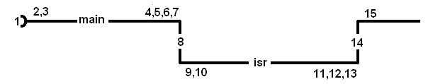
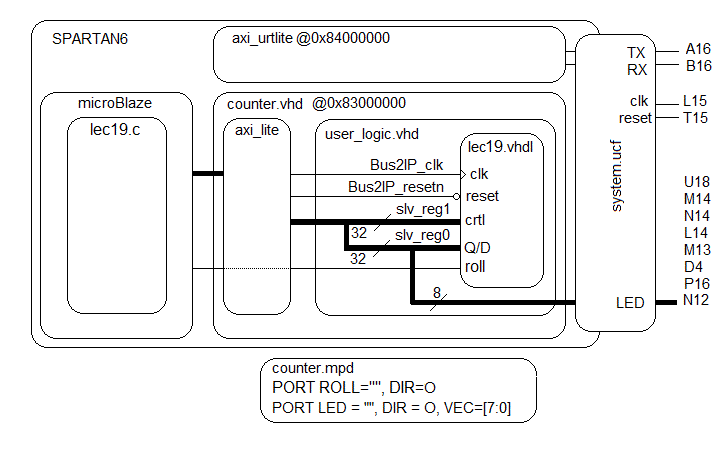
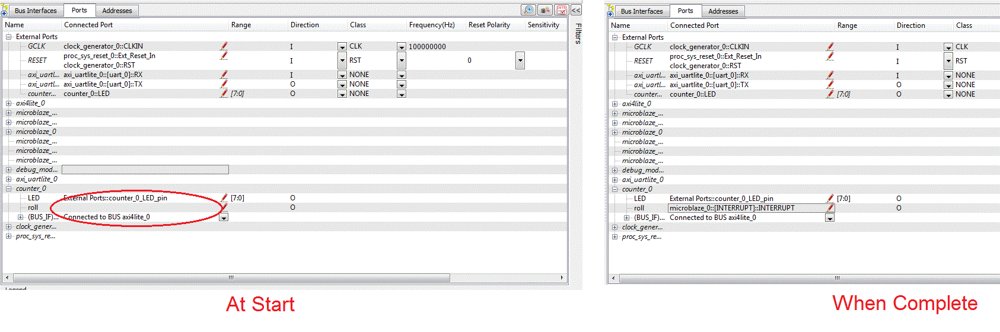

Interrupts
Interrupts are used when you want to your system to do more than one
thing at a time. An interrupt service routine (ISR) is a subroutine
called by hardware. The following figure illustrates the process of
"calling" and returning from an ISR.

- MCU powers up, jumps to RESET vector
- MCU starts execution of main
- Dynamic configuration
- configure hardware
- clear hardware interrupt flag
- enable hardware interrupt
- Event occurs which sets interrupt flag
- MCU stops running main
- MCU saves PC
- MCU disables interrupts
- Executes "GOTO ISR" at interrupt vector address
- ISR: Poll interrupt flags
- ISR: Execute appropriate code in ISR
- ISR: Clear interrupt flag
- ISR: executes rted
- Interrupts are enabled
- PC is restored
- MCU resumes running main
Interrupts in the microBlaze
Today we will examine how to generate an interrupt into the
microBlaze. This will require three ideas to come together.
First, hardware to generate an interrupt. For the example
today we'll be using the counter from hw10 to generate an
interrupt in the microBlaze. We will have to understand
how to route the roll signal to the microBlaze.
Second, we will need to configure
the EDK tool to recognize the roll signal as an interrupt. This
will require configuring the system.mhs file.
Third, we will need to understand how to write our C code
to respond to the interrupt signal generated by our counter.
Modify the counter
In HW#10 you modified the counter to assert the roll signal
when the count is at the maximum value. For the sake of this
lecture, we will assume that you put your HW#10 solution in
a file called lec19.vhd. The roll signal must
be sent to the microBlaze by routing it through both the
user_logic and counter interfaces. This is illustrated in the
following figure.

You should notice that the roll signal will go through all the
same interfaces as the LED signal. The important distinction is
that the roll signal will not be output from the Spartan chip and
as a consequence, the roll signal will NOT appear in the system.ucf
file. Instead it is routed to the microBlaze in the following step.
Configure the interrupt signal
Next add the roll signal to the counter.mpd file. Note that
this is unusual, because we have no intention of sending the
roll signal outside the Spartan 6 chip - every other signal in
the MPD file is being sent off chip. We will need this modification
to make the roll signal visible to the next step.
PORT roll = "", DIR = O
Make sure to save and close this MPD file. Then hit the
Rescan the User IP Repositories button before moving to the next step.
Open your <projectName>.mhs file and and find the configuration block
for your counter. If it does not have the following line, then add it
PORT roll = counter_0_roll
Note that the name "counter_0_roll" will need to agree with the name
of the roll signal in your counter instance in the the System Assembly
View, Port tab.
Now continue scrolling through the <projectName>.mhs file, looking
for the microBlaze block. Add the following line to the end of this
block (just before the END).
PORT interrupt = counter_0_roll
Save and exit the mhs file. Back in the System Assembly View, Ports
tab (as shown below at left), you may need to click in the red circled
area and select external for the roll signal. More than likely
it will already be labeled as an interrupt as shown at right in the
figure below.

You are now ready to program this new piece of hardware. So
Generate BitStream and then EXport Design.
C programming
In order to understand how interrupts are handled by the microBlaze, its
important to understand something about the hardware. I found most of the
following information in the microBlaze Users Guide.
//--------------------------------------------------------------------
//-- Name: Capt Jeff Falkinburg
//-------------------------------------------------------------------------
#include <xil_exception.h>
void myISR(void);
int main(void) {
microblaze_register_handler((XInterruptHandler) myISR, (void *) 0);
microblaze_enable_interrupts();
stuff();
} // end main
void myISR(void) {
isrCount = isrCount + 1;
}
There may be occasion for you to examine the compiled assembly language for
the microBlaze. To do this open the lec19.o file located in your project folder
Debug -> src -> lec19.o You will find the
MicroBlaze Processor Reference Guide handy to interpret the instructions.
Manual Easter-egg Hunt
Consult the MicroBlaze Processor Reference Guide and convert the
- addik r22,r19,1
- swi r23, r1, 60
- bgei r18, -44
Consult the
OS and Libraries Document Collection.
- What string formats are supported by the xil_print instruction?